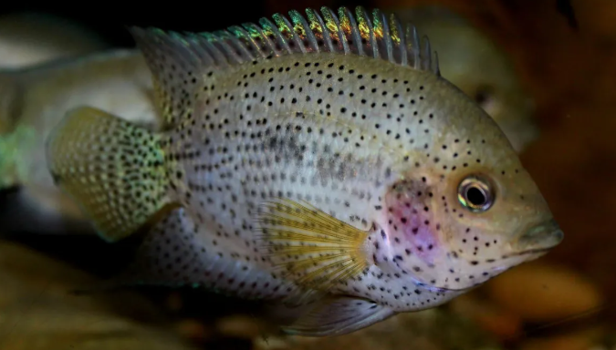
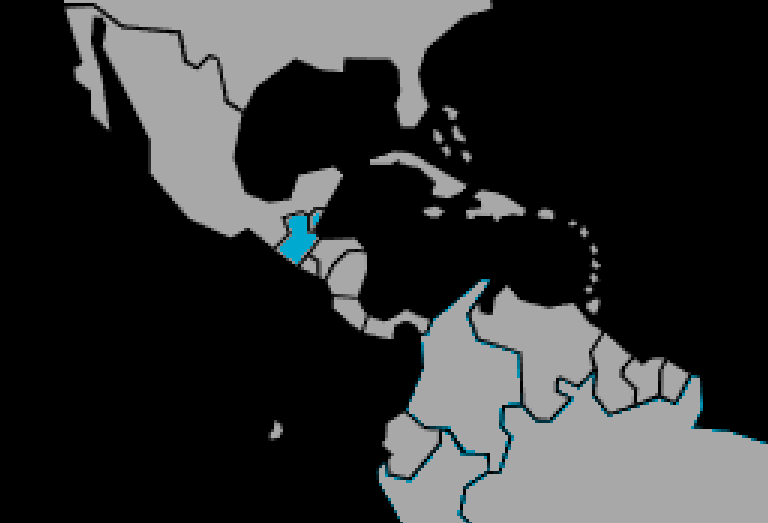

Systématique
- Ordre : Cichliformes
- Famille : Cichlidae
- Genre : Rocio

Rocio spinosissima est un cichlidé d'Amérique centrale moins connu que son cousin Rocio octofasciata. Son nom d'espèce fait référence à ses rayons de nageoire anale particulièrement épineux.
C'est un poisson au corps haut et comprimé latéralement. Il atteint une taille maximale avoisinant 10 à 15 cm. Sa coloration de fond est généralement gris-beige à violacé, tachetée de nombreux points noirs irréguliers sur l'ensemble du corps et des nageoires, lui donnant un aspect moucheté ou poivré très différent des taches bleues brillantes typiques du genre Rocio.
Rarement importé, il reste une espèce de spécialiste, souvent confondue dans la littérature ancienne avec d'autres "Cichlasoma" avant son reclassement dans le genre Rocio en 2007.
C'est un poisson benthopélagique territorial. Bien que robuste, les rapports d'éleveurs suggèrent qu'il pourrait être légèrement moins agressif que R. octofasciata, bien que cela reste un cichlidé au tempérament affirmé, surtout en période de reproduction.
Il apprécie les zones rocheuses et les abris formés par le bois mort. La maintenance en couple est recommandée, dans un aquarium structuré avec de nombreuses cachettes pour limiter l'agressivité intraspécifique.
Mode : ovipare (pondeur sur substrat découvert).
La reproduction suit le schéma classique du genre : le couple nettoie une pierre ou une surface dure pour y déposer ses œufs. Les soins parentaux sont biparentaux et très développés, les parents défendant farouchement la ponte puis les alevins.
Dimorphisme sexuel : Les mâles sont généralement plus grands et possèdent des nageoires impaires (dorsale et anale) plus longues et effilées. Les femelles sont souvent plus compactes.
Espérance de vie : Probablement entre 8 et 10 ans, par analogie avec les espèces proches du même genre.
L'espèce est originaire du versant Atlantique de l'Amérique centrale. On la trouve principalement au Guatemala (bassin du lac Izabal et fleuve Polochic) et au Belize (rivière Sibun). Il fréquente les eaux calmes ou à courant lent, souvent rocheuses.
Répartition

Origine naturelle :
- Guatemala : Bassin du Lac Izabal, Rio Polochic.
- Belize : Rio Sibun.
Paramètres de maintenance
Température : 25 à 29 °C.
pH : 7,0 à 8,0 (eau alcaline).
GH : 10 à 20 °dGH (eau dure).
Courant : Faible à modéré.
Volume conseillé : Minimum 200 à 250 L pour un couple. Un volume plus important est nécessaire pour une maintenance en communauté avec d'autres cichlidés d'Amérique centrale.
Régime alimentaire
Régime : omnivore à tendance carnivore.
Dans la nature, il se nourrit d'invertébrés benthiques et de petits organismes.
En aquarium, il accepte la plupart des nourritures (granulés, congelé, vivant). Un apport végétal occasionnel est bénéfique.